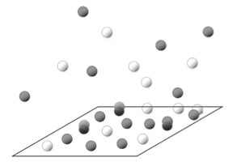

muPT#
Fig. 4 Open systems are characterized by variable number of particles and energy#
An intuitive derivation of Grand-Canonical Distribution
The derivation for grand canonical ensemble proceeds along the same lines as that for canonical. We will write the entropy of the combined system as a sum of the entropies of the system and reservoir, which are allowed to exchange energy and several particles. Then using the fact that reservoir is much larger than the system its entropy will be Taylor expanded around average number of particles and average energy-yielding exponential distribution for probability
In the \(\mu VT\) ensemble, the system samples different numbers of particles \(N\) consistent with \(\mu =const\) constraint imposed by putting a system in contact with an infinitely large chemostat.
The probability of a single microstate \(\Omega(E_i, N) =1\) can now be written down.
Entropy of reservoir
We already know that averages dominate the partition functions of macroscopic systems, which ensures the extensivity of entropy.
Therefore, this time, we will be more explicit and expand the entropy of the reservoir around the system’s average energy and particles respectively:
Grand canonical probability distribution
By combining the expressions of total and reservoir entropies, we get the probability distribution of the system’s energy and particle numbers.
Grand-Canonical distribution
Where partition function is summed over microstates with different energies and particle numbers!
Connections with \(NVE\) and \(NVT\)#
Statistical dominance of average energy and numbers of particles
Recall that canonical ensemble was an exponentially weighted sum of microcanonical ensemble over energies
Likewise, we can show that Grand canonical can be expressed as exponentially weighted (by \(e^{\beta \mu N}\)) summation of canonical partition functions overall particle numbers \(N\)
The connection between partition functions and the domination of averages is seen clearly:
We also identify a new free energy for grand canonical ensemble as a function of thermodynamic variables
Legendre Transform
The grand-canonical free energy can also be seen as a Legendre transform of Energy concerning Energy and several particles, e.g., swapping the following pairs of conjugate variables \((S\rightarrow T)\) \((N \rightarrow \mu)\).
Grand potential
Using Euler’s relation \(E = TS+PV+\mu N\) for extensive thermodynamic variables we obtain an explicit expression for Grand potential in terms of volume and pressure:
Grand-canonical potential#
Using the Gibbs relation, one can show that the independent variables of grand potential are (\(T\), \(V\), \(\mu\))
Fluctuations#
Notice anology with NVT where we found \(\sigma^2_E = k_B T^2 C_v\) for energy fluctuations with \(C_v\geq 0\) implying stability. For particle fluctuataions instead of heat capacity we have the isothermal compressibility \(\kappa_T = -\frac{1}{V}\frac{\partial V}{\partial p} \geq 0\)
Ideal Gas#
Thermal wavelength \(\lambda = \frac{h}{(2 \pi mk_B T)^{1/2}}\)
Fugacity \(z = e^{\beta \mu}\)
Molecular adsorption on the surface#

One site one molecule model#
For the idea gas \(\mu = k_B T log \frac{p}{p_0}\)
This is known as Langmuir isotherm.
Multi-stide binding of molecular gas with internal states#
Molecule A binds to one site and adopts 2 conformations.
Two molecules of B can bind one site. When one molecle is bound it has one conformation and when two bound there are 5 conformations.
Phase equilibrium#
Recall that for equilibrium conditions under any ensemble; there is equality of intensive variables across the entire system. E.g., temperature, pressure, and chemical potential throughout the system must be equal. In the Case of the (N,P,T) ensemble commonly used by chemists, this is a consequence of Gibbs free energy minimization.
Since one phase interconverts to the other, we have
In equilibrium chemical potential of two phases (two conformations, two states, etc) are equal $\(\mu_1(p, T) = \mu_2(p, T)\)$
Chemical equilibrium and mass action law#
Chemical Equilibrium: Athermodynamics point of view
Equilibrium is reached when \(\mu_{react}=\mu_{prod}\) or written in terms of potential of each component
Writing more generally by using stoichiometric coeficients with a + sign for reactants and - sign for products we have
Recall that for ideal gases or dilute solutions with non-interacting species:
Where \(\mu^o(T)\) is a chemical potential corresponding to some standard state of the compound.
We arrive at mass action law, showing that at equilibrium, the constraints defined as the ratio of reactant and product concentrations depend only on thermodynamic variables of pressure and temperatures.
We can also derive the same result by writing down the condition of chemical equilibrium in terms of free energy change \(\Delta G=\Delta G^o+\sum_i \nu_i \cdot RT log (c_i)=0\)
The side of the left hand does not depend on chemical composition but only on thermodynamic variables, \(T\) and \(P\). We can write this constant as \(K(T,P)\) chemical equilibrium constant
Equilibrium constants from partition functions
We have derived partition functions for mixture of ideal gasses
Using Stirling’s approximation and taking derivative, we get the chemical potential for individual species:
Thus, we have explicitly identified \(\mu^o(T)\) or \(\gamma_i(T)\) factors.
Hence, chemical equilibrium constants can be computed in terms of the partition functions of molecules
Problems#
\(NVT-NVE-\mu V T\)#
Consider a three level single particle system with five microstates with energies 0, ε, ε, ε, and 2ε. What is \(\Omega(\epsilon n)\) n=0,1,2 for this system? What is the mean energy of the system if is in equilibrium with a heat bath at temperature T ?
Derive an expression for the chemical potential of an ideal gas using clssical mechanics model for energy \(E=\frac{p^2}{2m}\) in the \(\mu VT\) ensemble evaluate the fluctuations in particle number.
Consider a system in equilibrium with a heat bath at temperature \(T\) and a particle reservoir at chemical potential \(\mu\). The system can have a minimum of one and a maximum of four distinguishable particles. The particles in the system do not interact and can be in one of two states with energies zero or \(\Delta\). Determine the (grand) partition function of the system.
Combine the Gibbs formula of Entropy \(S=-k_B \sum_i p_i log p_i\) with the Grand canonical prbability distribution \(P(E_i,N)=\frac{e^{-\beta E_i+ \beta \mu N}}{Z_G}\) to show that \(\beta PV=log Z_G\)
Derive partition function for a pressure ensemble \((T, p, N)\) and show its connection with microcanonical ensemble \(N V E\)
At a given temperature T a surface with \(N_0\) adsorption centers has on average \(N\neq N_0\) number of adsorbed molecules. Suppose hat there are no interactions between molecules.
Show that the chemical potential of adsorbed gas is given by: \(\mu = k_B T log \frac{N}{N_0 - N a(T)}\)
What is the meaning of \(a(T)\)